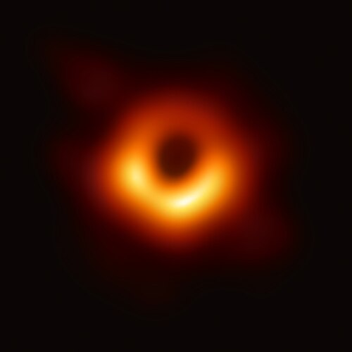

En astrophysique, un trou noir est un objet céleste si compact que l'intensité de son champ gravitationnel empêche toute forme de matière ou de rayonnement de s'en échapper.
De tels objets ne peuvent ni émettre, ni diffuser la lumière et sont donc noirs, ce qui revient à dire invisibles.
Dans ce cas, comment en faire une représentation ?
Et bien c'est très simple, on ne voit pas le trou noir en lui-même, mais on peut observer la matière brûlante qui brille autour avant d'être avalée.
Par exemple, voici la photo du trou noir M87 prise par la NASA :

Cette image est la photo la plus détaillée d'un trou noir aujourd'hui
Que se passe-t-il si l'on s'en approche ?
Autour du trou noir se trouve une frontière invisible appelée l'horizon des événements. Une fois cette limite franchie, la gravité devient si puissante que même en voyageant à la vitesse de la lumière, il est impossible de faire demi-tour.
Néanmoins, les trous noirs restent à ce jour l'un des plus grands mystères de l'univers...